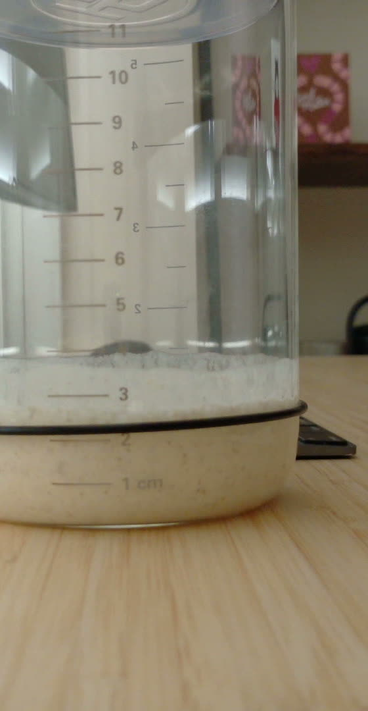

Fed.
Simon reset the baseline. The origin story begins again.
A living fermentation experiment watched by a webcam and narrated by Hermes. The agent checks the starter, estimates its rise, writes notes, and pings Telegram when the jar does something worth noticing.

Simon reset the baseline. The origin story begins again.
Suspicious optimism detected near the lower edge of the jar.
Baseline set to 2.2cm.
The rise curve steepens. Main character energy.
Every few minutes, a small local computer captures a webcam image. Hermes estimates the starter’s current height, compares it with previous readings, records uncertainty, updates the website, and sends Telegram alerts for meaningful events. The AI can be wrong — glass, residue and lighting are tricky — so Simon can correct key moments like feeding or baseline resets.